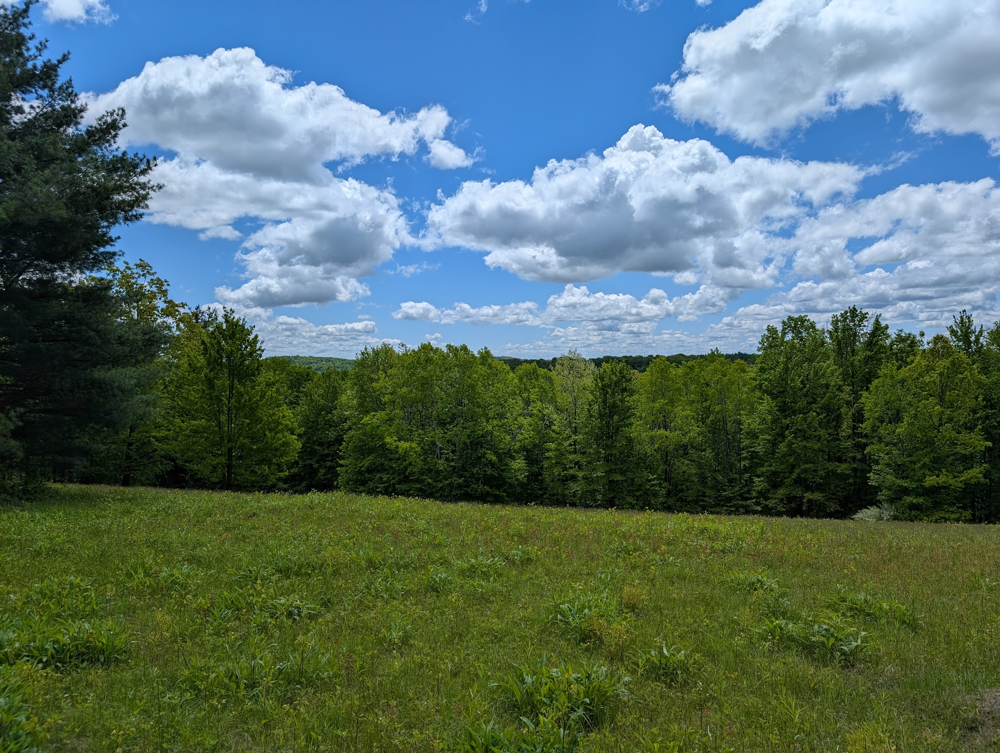

2025 was a year with various changes in my life. Here’s an overview:
The Good of 2025
A New Job!
In March of this year I left behind my job at Corewell Health for a new opportunity at Cardamom Health.
While I greatly valued my time at Corewell Health, to be a data scientist at one company for over 5 years is not exactly a common occurrence. I saw many talented data scientists leave for greener pastures, and with that, I got data points that both my skillset and salary began to lag behind relative to my peers. However, I felt a sense of loyalty to the company that took a chance on hiring me coming out of grad school.
When I got an offer from Cardamom, I realized I couldn’t keep relying on loyalty as an excuse to be complacent in my career, and I needed to take the chance and see what things were like on the consulting side of healthcare. I feel like in this new role I have thrived.
Yet Again, More Travel
This year, I continued my travels and added 3 National Parks to my belt with visiting the Everglades, Redwoods, and Crater Lake. (I don’t have ambitions to hit every single national park in the US or anything like that; I’ve crossed off quite a few national parks that were on my “must-do” list since I visited my first one back in 2022.)
In general, my main travel experiences consisted of the following:
- Florida
- Oregon
- Chicago
- Other solo hikes
Florida
I took a trip to visit my parents in March (which was awkwardly placed in between my two-week notice at Corewell, so it was a very weird trip emotionally speaking), and we decided last-minute to go visit southern Florida.
But also hit some areas closer to central Florida, such as my first hockey game:
Oregon
In July, I visited Oregon and traveled around the state on a week-long trip:

Chicago
I was able to visit the Microsoft AI Tour in Chicago in September as a work trip, but that didn’t stop me from doing some sightseeing outside of the event:


Solo Excursions
